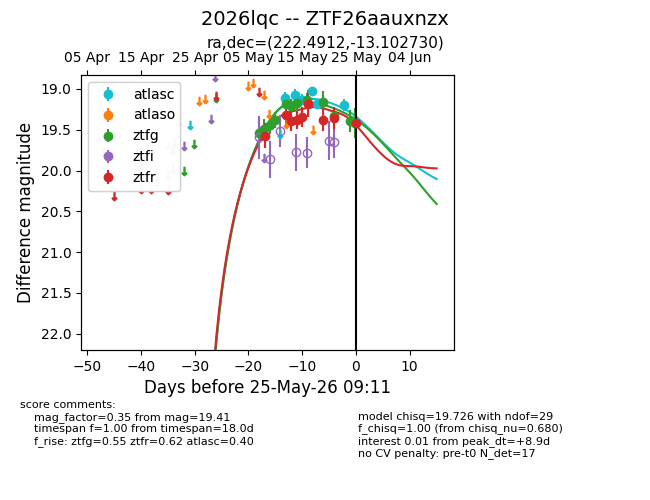
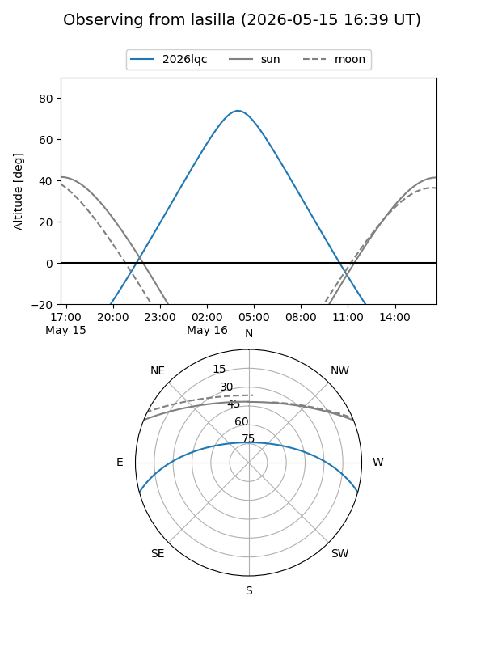
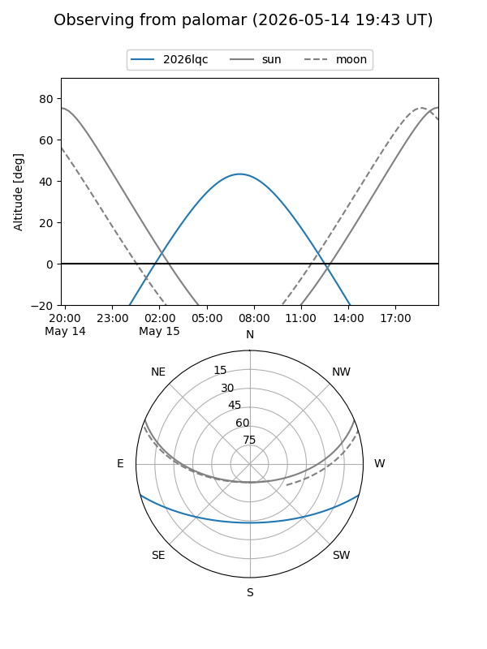
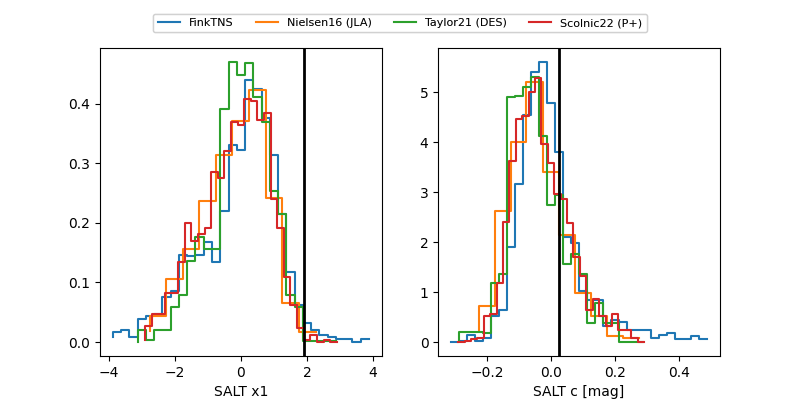

2026lqc
Target 2026lqc at 2026-05-25 09:12
Aliases and brokers:
lsst-FINK: link
lsst-Lasair: link
lsst-ALeRCE: link
ztf-FINK: link
ztf-Lasair: link
ztf-ALeRCE: link
TNS: link
YSE: link
alt names
ZTF26aauxnzx (ztf,fink_ztf)
2026lqc (tns,yse)
Coordinates:
equatorial (ra, dec) = 222.4912,-13.10273
equatorial (HMS+DMS) = 14:49:57.89,-13:06:09.83
galactic (l, b) = (342.2582,+40.54806)
Flags:
Photometry:
last atlasc=19.20, ztfg=19.42, ztfr=19.41
6 atlasc, 12 ztfg, 9 ztfr detections
Lightcurve

Visibility


Additional plots
